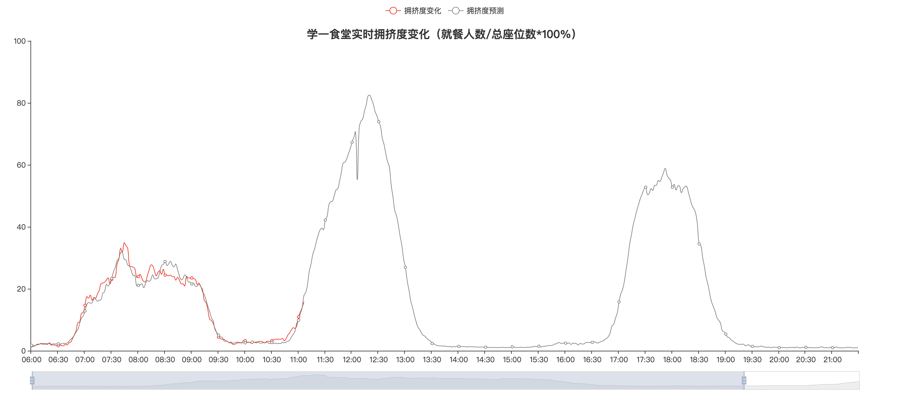
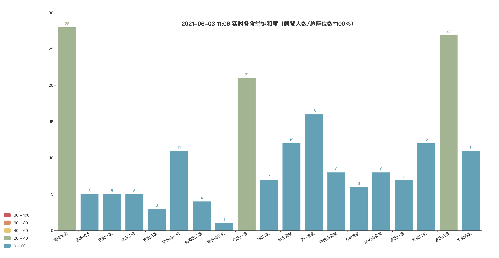
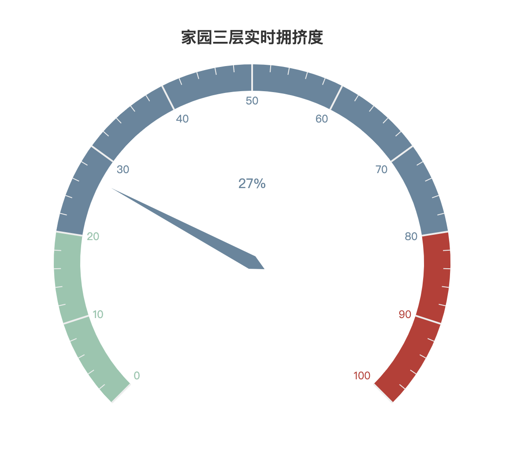
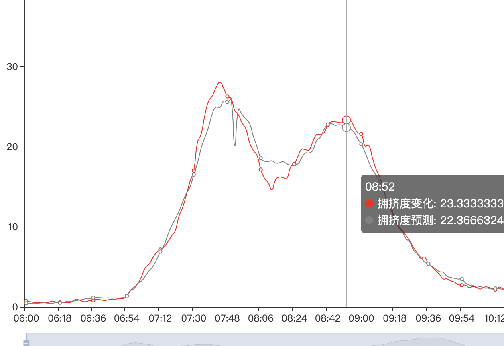
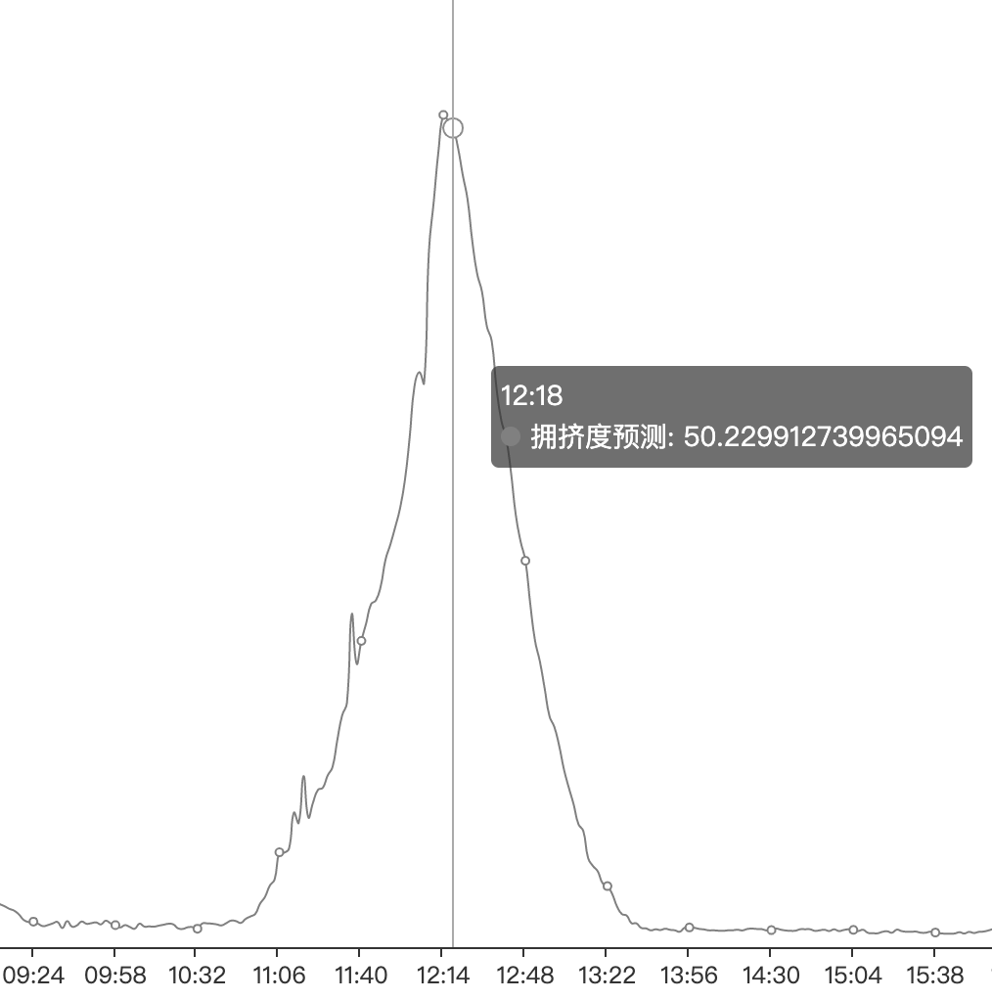
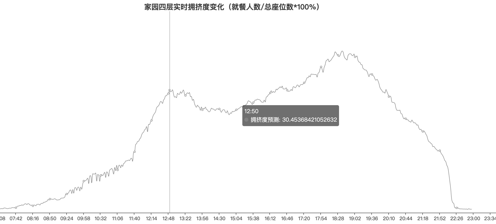

本数据采用北大门户公开数据，每两分钟更新一次（更新时间为6:00-23:58）！
我们对于全校所有食堂的数据进行了跟踪分析，并实时采集和修正信息，实现了实时预测每个食堂的拥挤度变化，以及可以直观的表示出拥挤程度。并且我们根据这些信息也发现了一些很有趣的事情。
我们基于爬虫手段，每分钟对于网站进行访问，从而更新数据，并将数据存入数据库。之后我们基于已有数据和既往数据进行分析和处理，进行“人工学习”，拟合出对于未来人数变化的预测，并将系列信息进行了可视化操作。
我们对于数据进行综合展示，对于每个食堂的实时数据变化和未来人数预测，以及拥挤程度。 
之后我们对于每个食堂生成了单独页面，方便进行数据查看。并直观的显示出了食堂的实时拥挤程度。
我们观察了几个食堂早餐的人数高峰，发现几个校内食堂大多最高峰发生在7:44左右（如学一、家一、农园等），甚至我们可以发现燕南和农园可能会稍微推迟到7:50达到顶峰，这或许就是早八人最后的倔强了吧（雾
接下来我们发现各个食堂第二个高峰几乎是关闭之前的一段时间，所以说大家果然还是卡点起床吃饭(x，我们再看学五甚至到了9:40才到达峰值x
不过再看几个校外食堂可以发现在早餐时间一直保持着大概平滑的数值，显然对于研究生xjjxgg们，似乎起床的压力就不是很大了x
显然我们发现高峰期全部集中到了12:20左右，显然大概是大家下了课直接去食堂吃饭，以及我们可以发现食堂距教学楼的远近影响到了高峰时间的变化
我们观察曲线的变化，可以清晰的发现农园的变化最为陡峭，显然他完美的承接了学生们【课间】就餐的需求x
反观家园食堂，随着楼层增高逐渐曲线趋于平稳，我想在人数曲线变化上来看，这四层楼设计还是很合理的，区分了不同的人群。尤其我们发现在中午几乎没有人去4楼吃饭（大多数怕都是上那里自习的x
我们发现晚餐的高峰并不是17:00之后的下课，反而对于大部分食堂全部都是在18:00，而且我们观察变换曲线，却是没比午餐平缓多少，我们不妨猜测一下大家晚上有事的人就变得很少，更注重与享受这个晚餐，或许存在一些约饭的可能，导致整体就餐时间往后推移？（或者说大家在3-5点下课的人数较少，而更偏向于18:00左右的就餐时间（哦不，或者说是大家在上晚课前选择卡着时间进入了食堂就餐qwq